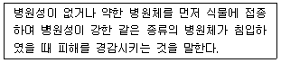
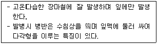
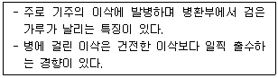
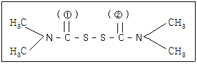

식물보호산업기사 (2017-03-05 기출문제)
1과목: 식물병리학
1. 묘목을 통해서 전반되는 병은?
- 감나무 뿌리혹병
- 사과나무 부란병
- 포도나무 흰가루병
- 배나무 붉은별무늬병
(정답률: 73%)

2. 사과나무 탄저병에 대한 설명으로 옳지 않은 것은?
- 가지나 잎에도 발병한다.
- 병든 과실은 쓴 맛이 난다.
- 성숙한 과실은 상처를 통해서만 감염된다.
- 과실에서는 주로 성숙기 가까이에 발병한다.
(정답률: 87%)
3. 다음에 설명하는 용어는?

- 저항성
- 감수성
- 교차보호
- 과민반응
(정답률: 81%)
4. 식물병을 일으키는 바이러스의 진단에 대한 설명으로 옳지 않은 것은?
- 전자현미경으로 볼 수 있다.
- 핵단백질로 구성된 거대분자이다.
- 인공 배지에서 배양하여 확인한다.
- 막대형, 구형 등 여러 가지 모양이다.
(정답률: 80%)
5. 다음에 설명하는 식물병은?

- 오이 흰가루병
- 오이 노균병
- 오이 풋마름병
- 오이 덩굴쪼김병
(정답률: 76%)
6. 세균에 의해 발생하는 병은?
- 벼 도열병
- 벼 키다리병
- 벼 흰잎마름병
- 벼 잎집얼룩병
(정답률: 78%)
7. 생물적 방제법에 대한 설명으로 옳은 것은?
- 효과가 늦은 편이다.
- 주변 환경에 영향을 받지 않는다.
- 병 발생 후에도 방제 효과가 좋다.
- 넓은 지역에 광범위하게 활용하기 쉽다.
(정답률: 83%)
8. 보르도액에 대한 설명으로 옳지 않은 것은?
- 보호살균제이다.
- 꿀벌에게 유해하다.
- 석회유에 황산구리 수용액을 넣어 만든다.
- 제조한 후 시간이 경과함에 따라 약효가 감소한다.
(정답률: 79%)
9. 배나무 불마름병의 병원체는?
- 세균
- 균류
- 선충
- 바이러스
(정답률: 70%)
10. 식물이 병원균에 대하여 저항하기 위해 분비하는 성분이 아닌 것은?
- 페놀
- 셀룰로오스
- PR-단백질
- 파이토알렉신(phytoalexin)
(정답률: 71%)
11. 감자 잎말림병의 병원체는?
- 세균
- 균류
- 선충
- 바이러스
(정답률: 57%)
12. 씨감자를 고랭지에서 생산하는 이유로 옳은 것은?
- 감자역병의 발생이 적은 환경이기 때문에
- 토양이 비옥하고 여름온도가 낮기 때문에
- 감자의 수확이 늦어 알이 굵어지기 때문에
- 바이러스 병에 걸리지 않는 씨감자를 생산하기에 알맞은 환경이기 때문에
(정답률: 85%)
13. 순활물기생체에 속하는 것은?
- 감자 역병균
- 보리 깜부기병균
- 고구마 무름병균
- 배추 무사마귀병균
(정답률: 64%)
14. 세균을 그램 염색에 의하여 분류할 때 양성균의 반응 색깔은?
- 보라색
- 파란색
- 빨간색
- 하얀색
(정답률: 90%)
15. 식물병을 일으키는데 필요한 세 가지 주요요인으로 가장 거리가 먼 것은?
- 환경
- 병원체
- 감수체
- 증식속도
(정답률: 93%)
16. 다음 설명에 해당하는 것은?

- 벼 도열병
- 보리 줄기녹병
- 벼 깨씨무늬병
- 보리 겉깜부기병
(정답률: 77%)
17. 사과에 발생되는 병으로 주로 죽은 조직을 통해 감염되고 병든 부위의 껍질을 벗겨보면 알콜과 같은 냄새가 나는 병은?
- 역병
- 부란병
- 겹무늬썩음병
- 검은별무늬병
(정답률: 92%)
18. 인공배지 상에서 배양되지 않는 식물병원균은?
- 감자 역병균
- 참외 흰가루병균
- 고구마 무름병균
- 오이 잿빛곰팡이병균
(정답률: 54%)
19. 식물병과 매개충의 연결로 옳지 않은 것은?
- 벼 오갈병 - 끝동매미충
- 콩 모자이크병 - 진딧물
- 밀 줄무늬잎마름병 - 벼멸구
- 벼 검은줄무늬오갈병 – 애멸구
(정답률: 70%)
20. 병원체를 접종하여도 기주식물이 전혀 병에 걸리지 않는 경우에 해당하는 용어는?
- 면역성
- 저항성
- 회피성
- 내병성
(정답률: 81%)
2과목: 농림해충학
21. 곤충의 유효적산온도를 구하는 공식은? (단, k : 유효적산온도, x : 발육영점온도, t : 측정온도, d : 온도 t에서의 발육일수)
- k=(t+x)÷d
- k=(t-x)÷d
- k=(t+x)×d
- k=(t-x)×d
(정답률: 71%)
22. 살비제는 주로 어떤 해충에 효과가 있는 약제인가?
- 선충류
- 곤충류
- 응애류
- 설치류
(정답률: 83%)
23. 벼의 잎을 엽초만 남기고 마구 먹으며 다 먹은 다음에는 다른 논으로 이동하는 해충은?
- 멸강나방
- 벼밤나방
- 혹명나방
- 벼잎말이나방
(정답률: 78%)
24. 곤충의 입틀이 빠는 형태인 것은?
- 벼메뚜기
- 뽕나무하늘소
- 도토리거위벌레
- 진달래방패벌레
(정답률: 74%)
25. 외국에서 우리나라로 침입한 해충이 아닌 것은?
- 소나무좀
- 솔잎혹파리
- 밤나무혹벌
- 버즘나무방패벌레
(정답률: 61%)
26. 천막벌레나방의 분류학적 위치는?
- 자나방과
- 솔나방과
- 재주나방과
- 산누에나방과
(정답률: 67%)
27. 완전변태를 하는 것은?
- 혹벌과
- 진딧물과
- 매미충과
- 깍지벌레과
(정답률: 69%)
28. 경제적 피해수준에 대한 설명으로 옳은 것은?
- 해충에 의한 피해액이 방제비용과 같은 수준의 밀도를 의미한다.
- 해충에 의한 피해액이 방제비용과 무관한 수준의 밀도를 의미한다.
- 해충에 의한 피해액이 방제비용보다 높은 수준의 밀도를 의미한다.
- 해충에 의한 피해액이 방제비용보다 낮은 수준의 밀도를 의미한다.
(정답률: 69%)
29. 주로 파의 뿌리를 가해하는 해충은?
- 파좀나방
- 파굴파리
- 파총채벌레
- 고자리파리
(정답률: 71%)
30. 벼멸구 방제방법으로 옳지 않은 것은?
- 내충성 품종을 심는다.
- 질소질 비료를 많이 준다.
- 천적으로는 신총재벌, 논거미 등이 있다.
- 약제로는 뷰프로페진·에토펜프록스 수화제가 있다.
(정답률: 84%)
31. 배추흰나비에 대한 설명으로 옳지 않은 것은?
- 연 3~4회 발생한다.
- 십자화과 작물도 가해한다.
- 장마철에 가장 많은 피해를 준다.
- 천적으로는 꼬마나나니, 황다리납작맵시벌 등이 있다.
(정답률: 64%)
32. 구기자혹응애에 대한 설명으로 옳은 것은?
- 줄기에 공모양의 큰 벌레혹을 형성한다.
- 벌레혹의 입구는 주로 잎의 앞면에 많다.
- 가지 끝에 벌레혹을 형성하고 그 속에서 가해한다.
- 잎에 기생하여 둥근 벌레혹을 만들고 그 속에서 가해한다.
(정답률: 59%)
33. 솔잎혹파리에 대한 설명으로 옳은 것은?
- 성충이 솔잎을 갉아 먹는다.
- 유충이 어른 줄기 속을 파고 들어간다.
- 유충이 실을 내어 솔잎을 뭉쳐놓고 그 안에서 씹어 먹는다.
- 유충이 솔잎의 밑부분에서 즙액을 빨아먹고 벌레혹을 만든다.
(정답률: 79%)
34. 곤충의 특징으로 옳지 않은 것은?
- 생식문은 배 끝에 있다.
- 호흡기관과 허파는 배 아래쪽에 있다.
- 머리에는 입틀, 더듬이, 겹눈 등이 있다.
- 대체로 다리는 3쌍이고 5마디로 구성되어 있다.
(정답률: 78%)
35. 곤충 표피에 대한 설명으로 옳지 않은 것은?
- 수분 손실을 억제한다.
- 근육의 부착점으로 작용한다.
- 감각기관이 존재하지 않는다.
- 표피층, 표피세포 및 기저막 등으로 구성된다.
(정답률: 82%)
36. 거세미나방의 월동 충태는?
- 알
- 성충
- 유충
- 번데기
(정답률: 63%)
37. 유약호르몬의 분비 기관은?
- 모세기관
- 알라타체
- 앞가슴샘
- 카디아카체
(정답률: 81%)
38. 일반적으로 광릉긴나무좀은 1년에 몇 회 발생하는가?
- 1회
- 2회
- 3회
- 4회
(정답률: 73%)
39. 곤충의 머리에 대한 설명으로 옳지 않은 것은?
- 입틀이 있다.
- 1쌍의 겹눈이 있다.
- 1쌍의 홑눈이 있다.
- 1쌍의 더듬이가 있다.
(정답률: 74%)
40. 사과응애에 대한 설명으로 옳은 것은?
- 번데기로 월동한다.
- 1년에 7~8회 발생한다.
- 뿌리 근처에서 월동한다.
- 주로 뿌리 부위를 가해한다.
(정답률: 62%)
3과목: 농약학
41. 수화제에 물을 가하여 조제한 현탁액에 있어서 고체입자가 균일하게 부유하는 성질과 그 안정성을 의미하는 것은?
- 현수성
- 유화성
- 가용성
- 비산성
(정답률: 80%)
42. 사람이 일생을 통하여 매일 섭취하여도 아무런 영향을 주지 않는 약량을 무엇이라 하는가?
- 최대잔류허용량
- 1일 섭취허용량
- 최대무작용량
- 농약잔류허용량
(정답률: 60%)
43. 네오아소진(Neoasozin)에 대한 설명으로 옳은 것은?
- 유기주석제 농약이다.
- 직접 살균력이 아주 강하다.
- 주로 분제와 입제로 사용된다.
- 사과의 부란병에 적용할 수 있다.
(정답률: 61%)
44. 수화제 제조용 증량제로 가장 적당한 것은?
- 규조토
- 탈크
- 모래
- 유안
(정답률: 62%)
45. 작용기작이 식물호르몬 작용 교란 제초제가 아닌 것은?
- 2,4-D
- Dicamba
- MCPB
- PCP
(정답률: 68%)
46. 다음 중 유기인계 농약이 아닌 것은?(오류 신고가 접수된 문제입니다. 반드시 정답과 해설을 확인하시기 바랍니다.)
- 이피엔(EPN)
- 지네브(Zineb)
- 파라치온(Parathion)
- 디디브이피(DDVP)
(정답률: 56%)
47. 농약제형의 형태에 따른 분류가 아닌 것은?
- 미탁제
- 유탁제
- 유화제
- 훈증제
(정답률: 51%)
48. 농약을 주성분의 조성에 따라 분류한 것은?
- 유기인계
- 식물생장 조정제
- 입제
- 훈증제
(정답률: 77%)
49. 각종 작물의 탄저병에 적용되는 트리할로메칠치오계 약자는?
- 캡탄
- 펜시쿠론
- 다코닐
- 오소싸이드
(정답률: 66%)
50. 농약의 명칭 중 농약개발회사의 약자 또는 약종의 상징 문자에 선택번호를 부여하여 등록되기 전에 사용되는 명칭을 무엇이라 하는가?
- 품목명(item name)
- 시험명(code name)
- 상품명(trade name)
- 일반명(common name)
(정답률: 76%)
51. 다음 중 살충·살균효과를 겸비한 약제는?
- 보르도액
- 석회황합제
- 나코설퓨론제
- 디메토에이트제
(정답률: 63%)
52. 다음 Thiram 농약의 구조식 중 (①), (②) 속에 적당한 원소 기호는?

- ① O, ② S
- ① P, ② S
- ① O, ② O
- ① S, ② S
(정답률: 64%)
53. 저독성의 속효성이고 잔효성이 짧아 수확직전의 농작물이나 뽕의 해충방제에 적합한 약제는?
- 나크(NAC)제
- 이피엔(EPN)제
- 카보(Carbofuran)제
- 디디브이피(DDVP)제
(정답률: 51%)
54. 착색 촉진제인 에테폰(Ethephon) 액제의 작용기작 물질은?
- 제아틴(Zeatin)
- 에틸렌(Ethylene)
- 지베렐린(Gibbellin)
- 시토키닌(Cytokinin)
(정답률: 84%)
55. 다음 중 Pyrethrin 의 효력증진제(Synergist)는?
- Alkyl sulrhate
- Piperonyl butoxide
- Ethylene dibromide
- Methyldithiocarbamate
(정답률: 64%)
56. 식물생장 조절제인 옥신(auxin)의 범주에 해당되지 않는 것은?
- indole계 화합물
- benzoic계 화합물
- phenoxy계 화합물
- Carbamate계 화합물
(정답률: 59%)
57. 다음 농약의 약해 증상 중 급성적 약해 증상에 해당되지 않은 것은?
- 괴사 반점
- 발근 저해
- 개화 지연
- 비대 지연
(정답률: 72%)
58. 기계유 유제의 살충작용으로 가장 옳은 것은?
- 훈증으로 살충
- 식중독으로 살충
- 중추신경마비로 살충
- 광물유로 피복, 질식시켜 살충
(정답률: 76%)
59. 농약혼용에 따른 화학적 변화의 원인과 가장 거리가 먼 것은?
- 알칼리에 의한 분해
- 혼용에 의한 활성의 변화
- 혼용에 의한 물리적 변화
- 금속염의 친화에 의한 분해
(정답률: 55%)
60. 농약의 검사방법 중 분제의 분말도 측정은 몇 메쉬(mesh)에서 측정 검사하는가?
- 150
- 200
- 250
- 325
(정답률: 61%)
4과목: 잡초방제학
61. 주로 논에 발생하는 잡초로만 올바르게 나열한 것은?
- 강피, 벗풀
- 깨풀, 쇠털골
- 마디꽃, 바랭이
- 괭이밥, 알방동사니
(정답률: 76%)
62. 페녹시계 제초제가 아닌 것은?
- 이사-디 액제
- 벤타존 액제
- 엠시피에이 액제
- 메코프로프-피 액제
(정답률: 55%)
63. 논에서 가장 많이 사용하는 제초제의 제형으로 입제에 대한 설명으로 옳지 않은 것은?
- 살포가 간편하다.
- 액제보다 부피가 적다.
- 살포시 물이 필요하지 않다.
- 잎에 직접 붙지 않고 떨어지기 때문에 약해를 유발하지 않는다.
(정답률: 69%)
64. 잡초 종자의 모양이 올바르게 연결된 것은?
- 포크 모양 : 바랭이, 어저귀
- 낙하산 역할의 솜털 : 민들레, 망초
- 비늘 모양의 가시 : 도깨비바늘, 명아주
- 낚시 바늘 모양의 돌기 : 도꼬마리, 달개비
(정답률: 70%)
65. 잡초로 인한 피해 양상이 아닌 것은?
- 작물의 수량 감소
- 농작물의 품질 저하
- 토양의 유실 가속화
- 병해충의 서식지 역할
(정답률: 86%)
66. 작물과 잡초의 경합에 대한 설명으로 옳은 것은?
- 종내경합이라고 할 수 있다.
- C3 잡초의 경우 작물보다 광합성효율이 더 뛰어나다.
- 초관형성이 늦은 작물에서는 제초 요구 기간이 일찍 시작된다.
- 경합기간은 기상조건이나 재배방식과 무관하게 거의 일정하다.
(정답률: 68%)
67. 작물과 잡초의 경합으로 인하여 작물의 수량 또는 품질의 감소가 크기 때문에 잡초를 반드시 방제하여야 할 시기는?
- 잡초경합허용기간
- 잡초경합내성기간
- 잡초경합경제기간
- 잡초경합한계기간
(정답률: 73%)
68. 주로 밭에 발생하는 다년생 잡초가 아닌 것은?
- 별꽃
- 메꽃
- 쇠뜨기
- 소리쟁이
(정답률: 51%)
69. 2년생 잡초에 대한 설명으로 옳지 않는 것은?
- 망초, 냉이, 방가지똥 등이 있다.
- 2년 동안에 생활환을 완전히 끝낸다.
- 월동기간에 화아가 분화하며 주로 온대지역에서 볼 수 있는 잡초이다.
- 주로 봄과 여름에 발생하여 같은 해 여름과 가을까지 결실하고 고사한다.
(정답률: 70%)
70. 논에 다년생 잡초가 증가하는 요인으로 가장 거리가 먼 것은?
- 추경의 감소
- 인력 제초의 감소
- 만기 이앙의 증가
- 1년생 제초제의 연용
(정답률: 65%)
71. 벼 재배양식 중에서 잡초 발생이 가장 많은 것은?
- 건답직파
- 담수직파
- 성묘 손이앙
- 어린모 기계이앙
(정답률: 81%)
72. 방동사니와 잡초의 형태적 특성으로 옳지 않은 것은?
- 습지나 물속에서 잘 자란다.
- 올방개, 매자기, 올챙이고랭이 등이 있다.
- 대부분 줄기가 삼각형 모양을 하고 있다.
- 잎은 둥글고 크며, 엽맥이 그물처럼 얽혀있다.
(정답률: 66%)
73. 잡초 종자가 일장에 감응하여 휴면이나 휴면타파를 하는 형태는?
- 2차성 휴면형
- 기회적 휴면형
- 계절적 휴면형
- 자발성 휴면형
(정답률: 73%)
74. 지하경으로 번식 가능한 잡초가 아닌 것은?
- 돌피
- 올미
- 올방개
- 향부자
(정답률: 59%)
75. 제초제의 용탈이 가장 심한 토양은?
- 사토
- 양토
- 식토
- 사양토
(정답률: 73%)
76. 작물과 잡초의 경합에서 가장 큰 경합을 나타내는 무기원소는?
- 인
- 칼륨
- 칼슘
- 질소
(정답률: 78%)
77. 잡초 종자가 공간적으로 산포하기 위한 특징으로 옳지 않은 것은?
- 산포에 유리한 형태적 특성
- 발아에 불리한 환경조건에서의 휴면성
- 바람, 물 및 인축의 동태와 관련된 이동성
- 동물이 섭취하여도 잘 소화되지 않은 특성
(정답률: 58%)
78. 제초제의 선택성과 관련이 적은 것은?
- 선별 대사
- 선별 흡수
- 선별 이행
- 선별 광합성
(정답률: 77%)
79. 채소밭의 잡초방제에 대한 설명으로 옳은 것은?
- 비닐 터널 재배는 고온 다습하므로 잡초 발생이 경감된다.
- 노지재배의 경우는 생육 후기에 중점적으로 잡초 방제를 실시한다.
- 시설원예의 경우에는 소수의 잡초가 대형화 될 수 있으므로 제초에 특히 힘쓴다.
- 흑색의 불투명한 필름으로 멀칭할 경우 백색의 투명한 필름보다 잡초 발생이 많아진다.
(정답률: 81%)
80. 잡초방제법 중에서 물리적 방제법에 해당하지 않는 것은?
- 잡초 소각
- 제초제 살포
- 토양 표면 피복
- 경작지 담수 및 배수
(정답률: 73%)